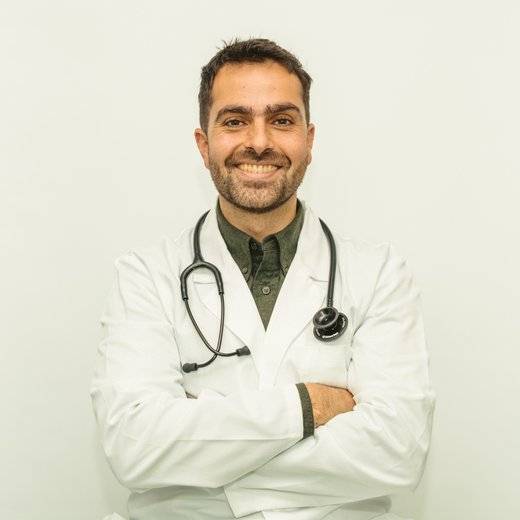

Medimos y entendemos tu biología.
Conocer nos permite sostener y optimizar. Medicina de frontera basada en evidencia para cumplir tus objetivos.

La salud ocurre en varias dimensiones a la vez.
Un examen "normal" te compara con un promedio poblacional amplio. Es un dato válido que se completa al mirar cómo respondes a la demanda real de tu vida.
Medimos tu biología individual: cómo duermes, cómo comes, cómo te mueves, cuánto estrés sostienes. Tus vínculos y tu entorno interactúan entre sí todo el tiempo.
Un sistema sostenido con criterio médico es lo que construye un cambio real en el tiempo.
Un proceso con precisión biológica y acompañamiento humano.
Observar
Tu historia, tu contexto y tu demanda real, antes de medir nada.
Conocer
Laboratorio, biomarcadores y composición corporal: tu mapa biológico real.
Ajustar
El mapa se revisa contra lo que tu biología va mostrando. Un ciclo que se repite y se afina.
La biología se anticipa. Este ciclo de observar, conocer y ajustar es la forma en que un sistema vivo aprende y se autorregula, un principio que en biología se describe como autopoiesis.
El cuerpo busca anticiparse.
La medicina clásica habla de homeostasis: el cuerpo que siempre vuelve a un mismo punto de calma. Un organismo vivo hace algo distinto: se anticipa a lo que viene y ajusta sus parámetros antes de que la demanda llegue. A eso se le llama alostasis, estabilidad a través del cambio activo.
Eso es lo que mide tu Mapa de Optimización: qué tan bien tu cuerpo lee y responde al ritmo real de tu vida.
Transformando la medicina y el bienestar en el impulso para tu propósito.
Un programa clínico diseñado y sostenido por un médico con más de 15 años de práctica, formación internacional certificada y un historial de construir instituciones en el rubro.
- Médico Cirujano, con formación en medicina integrativa y certificación internacional en medicina del estilo de vida, el estándar de la especialidad.
- Postítulo en Biología del Conocer y Comunicación Humana y formación en terapia con péptidos.
- Director Médico, Examedi.
- Medical Advisor, The Eternal Company — examen de microbiota líder en Latinoamérica.
- Creador de la Unidad de Medicina del Estilo de Vida, Clínica Vida Mar.
- Medical Advisor, Buda Lodge.
- Colaborador y asesor, Human Lab.
- Cofundador, Universidad Chilena de Medicina del Estilo de Vida.
- 15 años de práctica privada en salud preventiva y optimización biológica, y asesor médico de deportistas de alto rendimiento, incluyendo a Matías Lacroix (squash, Team Chile) e Ignacio Nordetti (velocista).
- Fundador de La Fuerza Food Group, grupo gastronómico con 7 locales y USD 3 millones en ventas anuales.
"Sostengo, con evidencia y con nombre y apellido, el mapa biológico de cada paciente."
— Dr. Manuel Acuña
Tu punto de partida en 45 minutos.
Asesoría Medicina Humana
45 minutos de evaluación clínica con Manuel: tu historia, tu demanda real y tu objetivo, revisados en profundidad.
- Define si este programa es tu camino
- Agenda y pago 100% online, vía Encuadrado
- Boleta reembolsable según tu sistema de salud preferente
El detalle del programa se conversa después, caso a caso.